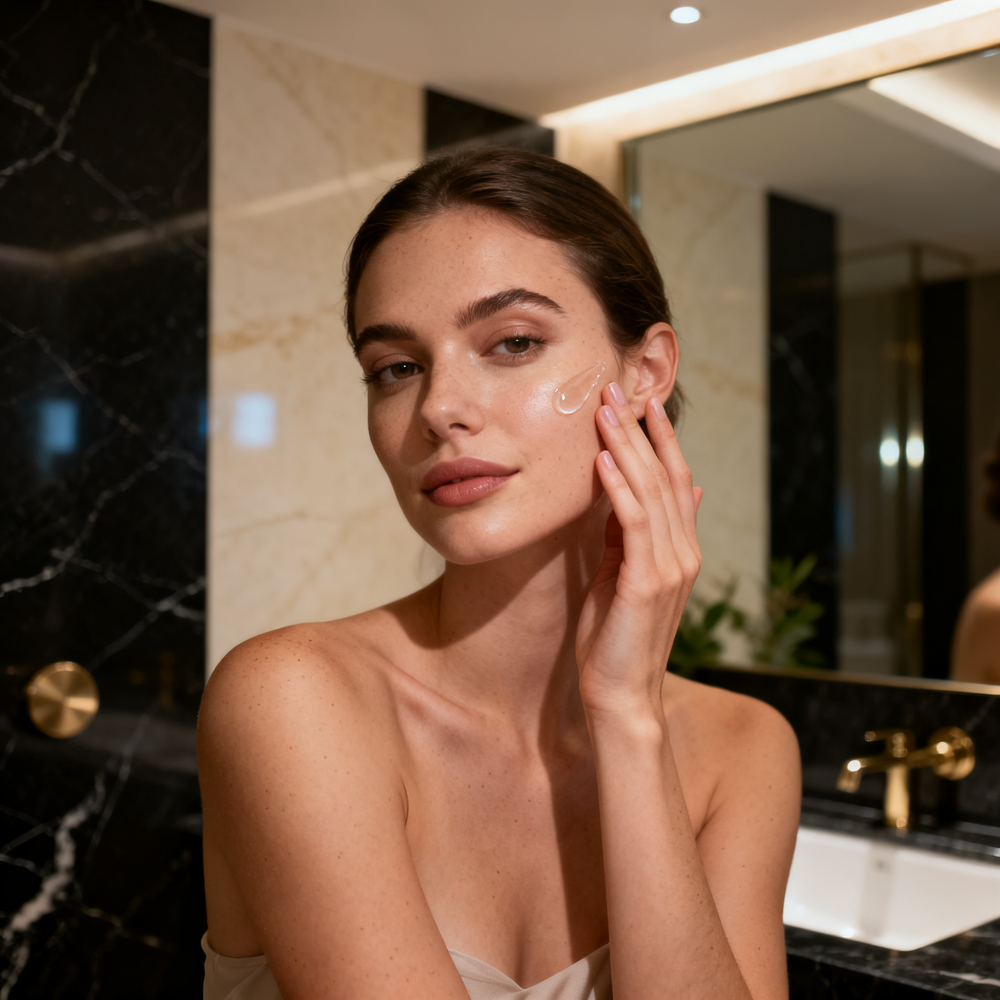

Luxury skincare is changing. The focus is moving away from simply having more products on a bathroom shelf and toward formulas built around purposeful ingredients, thoughtful textures and a better understanding of what skin actually needs.
A high price does not automatically make a skincare formula more effective. What matters is the ingredient, the formulation, the evidence behind its use and whether the product makes sense for your individual skin concerns.
Quick Take
| Ingredient | Best Known For |
|---|---|
| Retinoids | Fine lines and photoaging |
| Vitamin C | Antioxidant support and uneven tone |
| Niacinamide | Barrier support and oil balance |
| Ceramides | Skin barrier support |
| Hyaluronic Acid | Hydration |
| AHAs / BHAs | Exfoliation and texture |
| Peptides | Emerging anti-aging formulas |
Retinoids and Retinol: The Established Anti-Aging Actives
Retinoids remain among the most studied topical ingredients for photoaged skin.
Retinoids are a family of vitamin A derivatives. Retinol is one form commonly found in over-the-counter cosmetic products, while other retinoids may be available in stronger or prescription formulations.
Research has associated topical retinoids with improvements in the appearance of wrinkles, skin texture, elasticity and uneven pigmentation.
Stronger does not always mean better for everyone. Retinoids can cause dryness, peeling, redness or irritation, particularly when introduced too quickly.
For luxury skincare, the interesting point is not simply whether a product contains retinol. The formulation, concentration, stability, delivery system and overall tolerability can all influence the experience.
Vitamin C: Antioxidant Support and Brightening
Vitamin C has remained one of the most recognizable ingredients in premium skincare.
Topical vitamin C is valued for its antioxidant properties and its role in pathways related to collagen production and pigmentation.
Clinical research has found potential benefits for photoaged skin and uneven pigmentation, although results can vary depending on the formulation and study design.
A luxury vitamin C serum should therefore not be judged only by the percentage printed on the bottle. Stability, packaging and formulation can matter just as much.
Niacinamide: A Versatile Ingredient
Niacinamide, a form of vitamin B3, is another ingredient frequently found in modern skincare formulas.
It is used across products designed for different concerns, including uneven tone, oiliness and skin-barrier support.
One reason niacinamide remains popular is its versatility. Rather than being positioned exclusively as an anti-aging ingredient or an exfoliant, it can fit into routines designed around several different skin concerns.
That makes it particularly useful for people who prefer simpler routines.
Ceramides: Supporting the Skin Barrier
Ceramides are naturally occurring lipids found in the skin barrier.
In skincare, they are commonly used in moisturizers and other barrier-focused formulas. They can be particularly useful when the skin feels dry or when the barrier needs extra support.
A sophisticated routine still needs a strong foundation. If the skin barrier is struggling, adding more aggressive active ingredients may not be the smartest next step.
A well-formulated moisturizer containing ceramides can sometimes be a more practical addition than another highly concentrated serum.
Hyaluronic Acid: Hydration Without the Hype
Hyaluronic acid is widely used as a hydrating skincare ingredient.
It is commonly included in serums, moisturizers, masks and other formulations designed to support skin hydration.
The ingredient itself is not particularly mysterious. The more useful question is how it fits into the overall formula and routine.
Luxury should improve the experience and formulation — not replace evidence.
Peptides: Promising, but Read the Claims Carefully
Peptides have become increasingly visible in premium skincare.
They are often marketed around firmness, collagen support and smoother-looking skin. Some peptide ingredients have promising research behind them, but the category is broad and the evidence varies between different peptides and formulations.
That means it is useful to ask:
- Which peptide is being used?
- At what concentration?
- In what formulation?
- What evidence supports the specific claim?
Rather than treating "peptides" as one single proven category, consumers should look at the actual ingredient and the evidence behind the product's intended use.
AHAs and BHAs: Useful Exfoliation, Used Carefully
Chemical exfoliating ingredients can help improve the appearance and texture of skin by helping remove excess dead skin cells.
Alpha hydroxy acids, including glycolic and lactic acid, are commonly used for exfoliation. Salicylic acid is a beta hydroxy acid frequently used in products aimed at oily or acne-prone skin.
Overuse of exfoliating products can lead to dryness and irritation.
The goal should therefore not be maximum exfoliation. A better approach is controlled exfoliation that matches the skin's tolerance and the specific concern being addressed.
Established Ingredients vs. Emerging Trends
One of the biggest changes in modern skincare is the growing number of ingredients competing for attention.
Some have decades of research behind them. Others are relatively new, with early research, laboratory data or limited clinical evidence.
More Established Ingredients
- Retinoids and retinol
- Vitamin C
- AHAs such as glycolic and lactic acid
- Salicylic acid
- Ceramides
- Niacinamide
Emerging or Heavily Trending Ingredients
- New peptide complexes
- Ectoin
- PDRN
- Growth-factor-inspired ingredients
- Advanced delivery systems
- Biotechnology-derived cosmetic ingredients
Being new or fashionable does not automatically make an ingredient better.
The most interesting products are often those that combine emerging technology with sensible formulation rather than relying entirely on a trend.
What Actually Matters in a Luxury Skincare Formula?
When comparing expensive skincare products, look beyond the front of the packaging.
1. The Active Ingredient
What is the product actually designed to do?
2. The Formulation
An ingredient can look impressive on an ingredient list, but its performance depends on how the formula is designed.
3. Stability
Some ingredients are sensitive to light, oxygen, temperature or formulation conditions.
4. Skin Tolerance
A highly active product that constantly irritates the skin may be less useful than a gentler product that can be used consistently.
5. Packaging
Packaging can matter for protecting sensitive ingredients and maintaining product quality.
6. Evidence
Look for clinical research or credible dermatology guidance rather than relying only on a brand's marketing claims.
7. Consistency
A simple routine that you can follow consistently is often more realistic than a complicated routine containing every trending ingredient.
How to Choose Ingredients by Skin Concern
There is no single perfect ingredient list for everyone. Instead, start with the concern you want to address.
| Skin Concern | Ingredients to Know |
|---|---|
| Signs of photoaging | Retinoids and daily photoprotection |
| Uneven pigmentation | Vitamin C, retinoids, niacinamide |
| Dryness | Ceramides, hyaluronic acid |
| Uneven texture | Retinoids and controlled exfoliation |
| Oily or acne-prone skin | Salicylic acid and niacinamide |
The Luxury Approach: Less, but Better
The most sophisticated skincare routine does not necessarily contain the most products.
It should contain products that have a clear purpose.
Morning
- Gentle cleansing if needed
- A targeted antioxidant or treatment product
- Moisturizer when appropriate
- Broad-spectrum sunscreen
Evening
- Cleansing
- One targeted active ingredient
- Moisturizer
The exact routine should depend on skin type, concerns and individual tolerance.
Final Thoughts
Luxury skincare in 2026 is not simply about discovering the newest ingredient.
It is about understanding what deserves a place in your routine.
Retinoids and vitamin C have substantial research behind their cosmetic and dermatological uses. Ceramides, niacinamide and hyaluronic acid can play useful roles in hydration and barrier-focused routines.
Meanwhile, peptides and newer biotechnology-inspired ingredients deserve interest — but also a critical look at the evidence behind individual claims.
The smartest luxury skincare routine is not the one with the highest price tag.
It is the one where every product has a reason to be there.